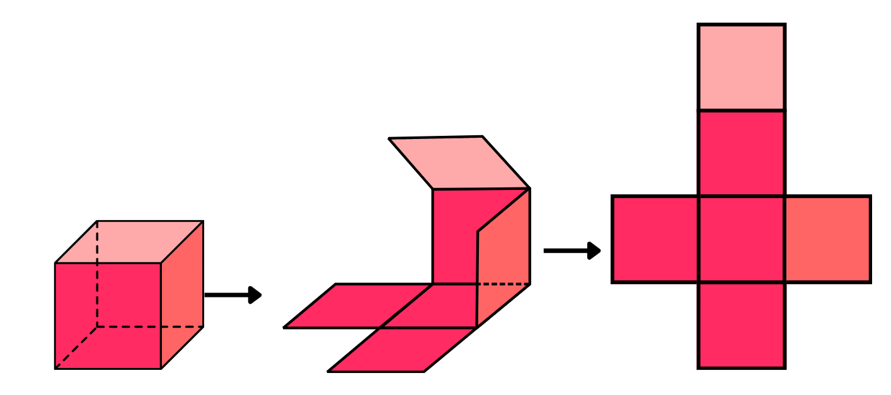
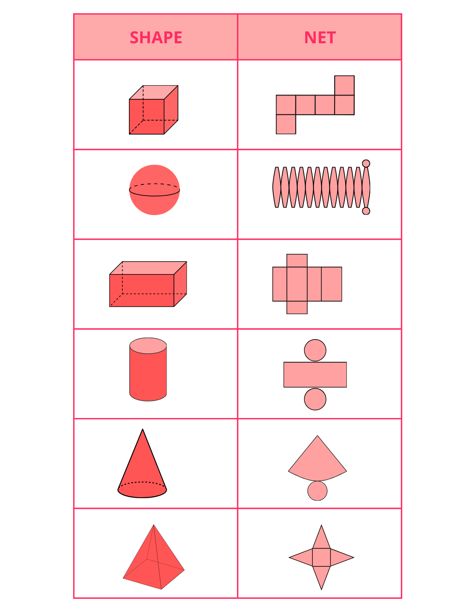
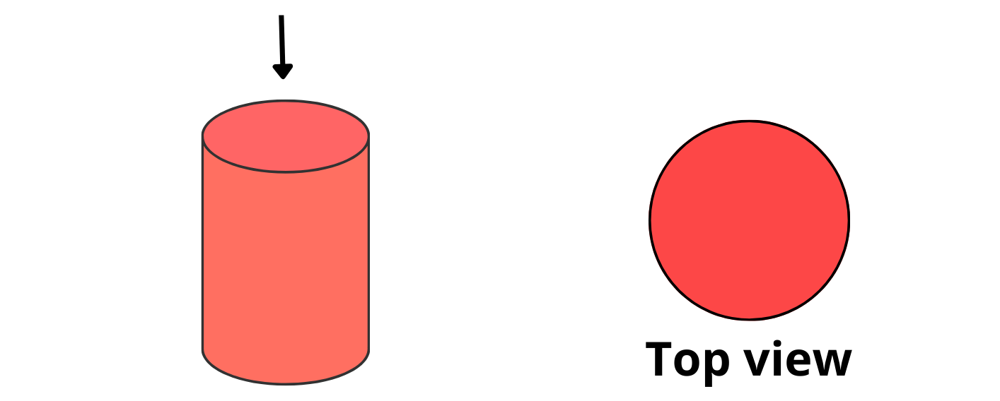
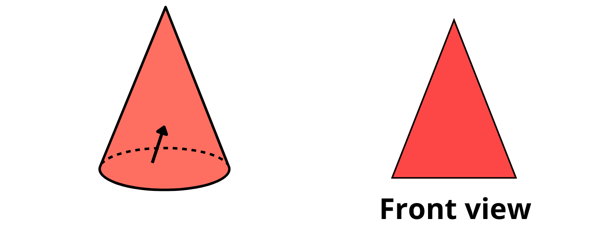
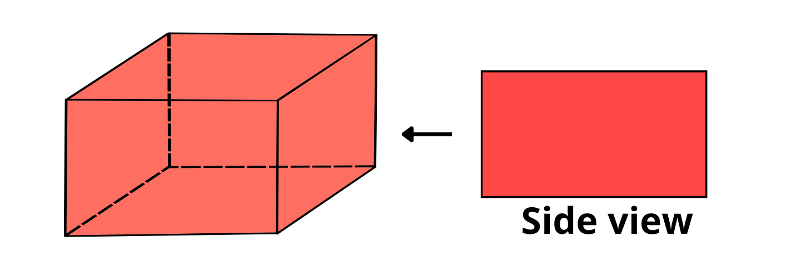

Nets of 3D Shapes
A net is a 2D representation of a 3D shape when it is unfolded, showing each face of the 3D shape.
Example: A cube’s net consists of 6 squares

Note: 3D shapes can have more one than 1 net pattern

How to Identify the Correct Net?
-
Visualizing the 3D shape:
Imagine unfolding the 3D shape, like opening a box or cutting along the edges of a 3D object. -
Identifying faces:
Determine the number and shapes of the faces (flat surfaces) of the 3D shape. -
Matching faces:
Ensure the net includes all the faces of the 3D shape, and that the shapes of the faces in the net match the shapes of the faces in the 3D shape. -
Connecting faces:
Think about how the faces connect to each other in the 3D shape and ensure that the corresponding faces in the net are connected in the same way.
Views of 3D Shapes (Top, Front, Side)
Top View
The top view shows how the shape looks from above.
Example: A cylinder appears as a circle when viewed from the top.

Front View
The front view shows the shape’s appearance from the front.
Example: A cone appears as a triangle from the front.

Side View
The side view shows the shape’s appearance from the side.
Example: A cuboid’s side view is a rectangle.
